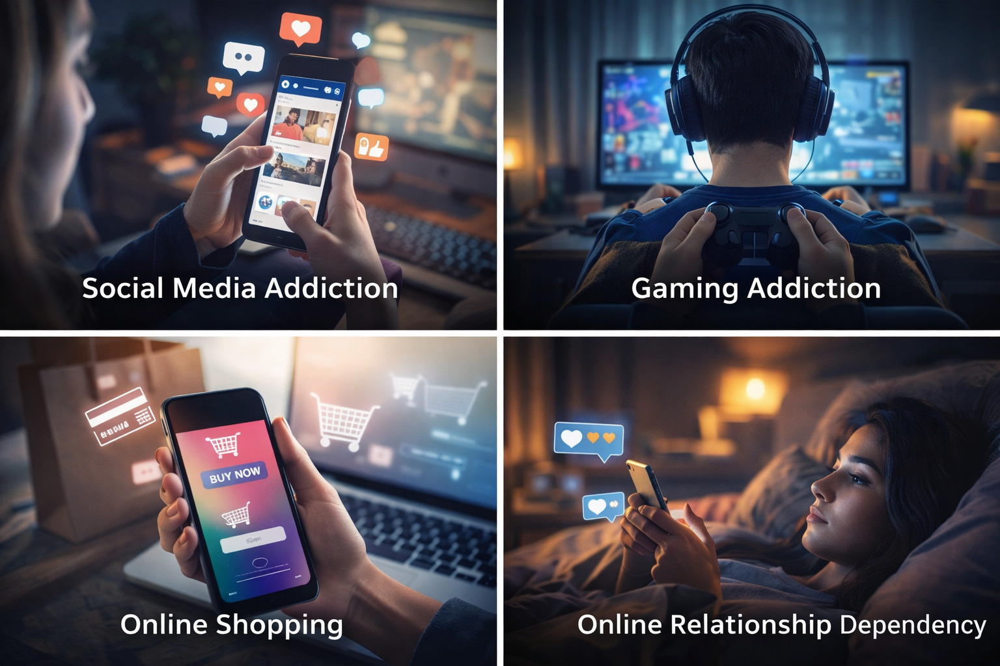
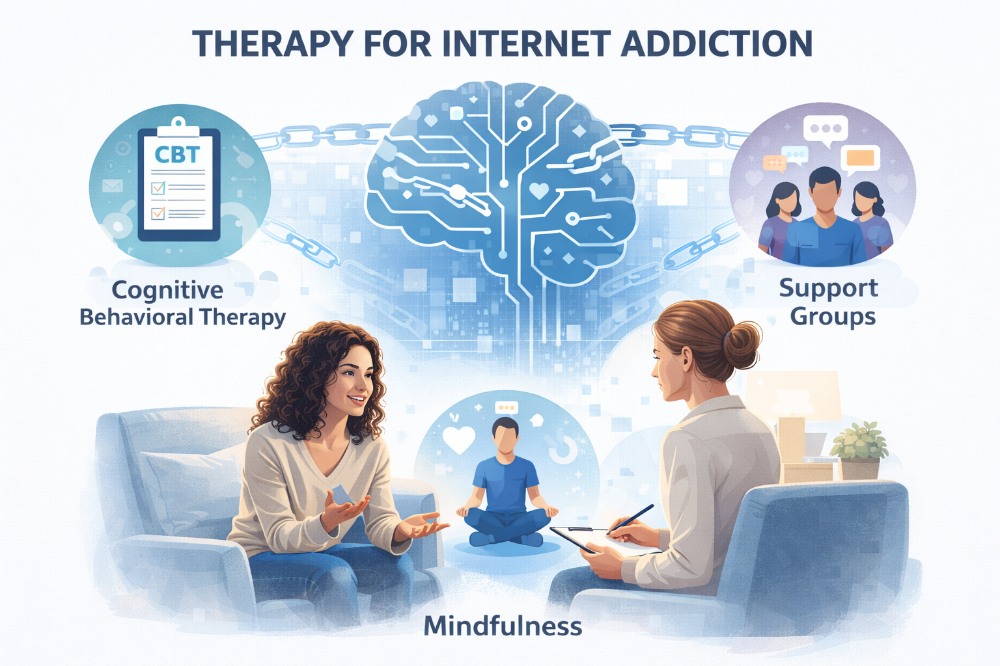
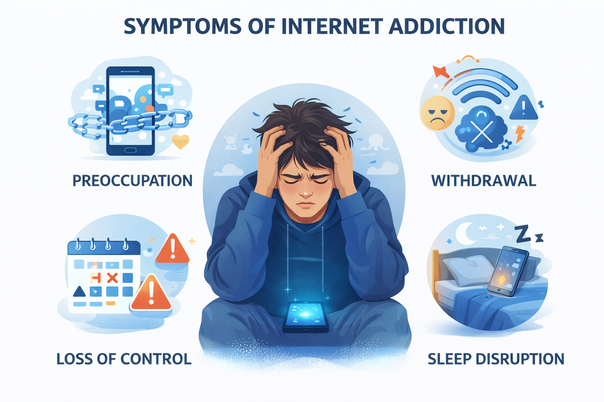

Use this self-test to reflect on compulsive device use, withdrawal signs, sleep disruption, and loss of control.

Compulsive scrolling, endless notifications, online gaming loops, and reward-based content can reinforce overuse.

Healthy routines, screen-free blocks, therapy, and family support can all reduce dependency patterns.

Withdrawal, sleep disruption, lower productivity, and emotional reliance on digital interaction are important signals.